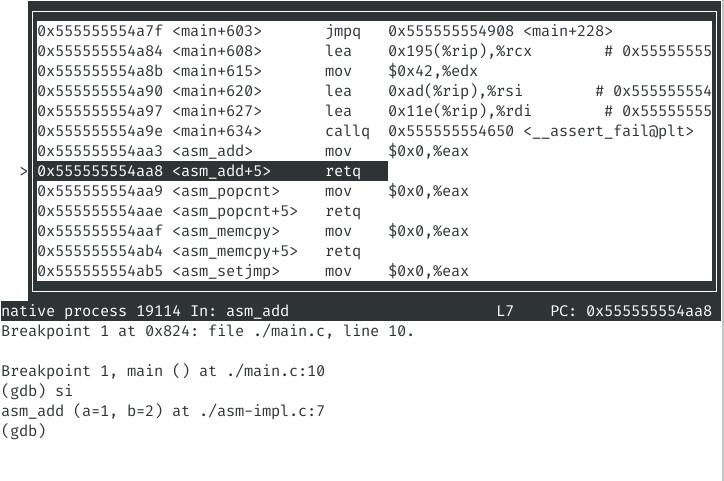

小实验 (Labs) 是 ICS 这门课程里的一些综合编程题，旨在结合课堂知识解决一些实际中的问题。因为问题来自实际，所以有时候未必能立即在课本上找到相关知识的答案，而是需要“活学活用”。因此，大家需要利用互联网上的知识解决这些问题，但不要试图直接搜索这些问题的答案，即便有也不要点进去 (也请自觉不要公开发布答案)。
请先阅读《计算机系统基础》Labs 须知。
获取代码：在 ics-workbench 中执行
git pull origin lab2提交方法：在 asm 目录下设置好 STUID, STUNAME 环境变量后，执行 make submit 提交。如果有一些心得体会，可以提交实验报告简单标明；也可以不提交实验报告。
| 161240007 (21:09 Jan 20) | 161240045 (20:16 Dec 28) | 171180589 (22:25 Dec 25) | 171180593 (15:18 Dec 30) | 171820548 (14:23 Jan 01) | 171860609 (20:13 Jan 11) | 181180200 (04:43 Jan 12) |
| 181220001 (20:34 Jan 12) | 181220002 (17:58 Dec 24) | 181220003 (01:57 Jan 12) | 181220004 (16:37 Dec 20) | 181220005 (23:08 Dec 25) | 181220010 (19:18 Dec 26) | 181220011 (20:37 Dec 26) |
| 181220012 (17:12 Jan 10) | 181220013 (08:42 Jan 12) | 181220014 (15:10 Dec 31) | 181220016 (21:54 Dec 22) | 181220018 (15:34 Jan 08) | 181220019 (00:40 Dec 31) | 181220022 (21:48 Dec 19) |
| 181220026 (14:05 Jan 02) | 181220028 (23:54 Dec 30) | 181220029 (21:29 Dec 24) | 181220030 (00:03 Dec 20) | 181220031 (15:24 Dec 25) | 181220032 (23:04 Jan 11) | 181220033 (15:47 Jan 12) |
| 181220034 (00:40 Dec 27) | 181220035 (23:09 Jan 05) | 181220036 (14:22 Dec 29) | 181220038 (22:17 Dec 21) | 181220039 (20:48 Jan 08) | 181220040 (15:49 Jan 12) | 181220041 (19:48 Jan 01) |
| 181220043 (13:53 Jan 04) | 181220044 (22:40 Jan 12) | 181220045 (23:35 Dec 26) | 181220046 (16:09 Dec 25) | 181220047 (20:50 Jan 11) | 181220048 (17:57 Dec 30) | 181220049 (19:07 Dec 17) |
| 181220051 (21:37 Jan 12) | 181220052 (00:05 Dec 20) | 181220054 (22:35 Jan 12) | 181220055 (16:16 Dec 26) | 181220056 (20:59 Dec 30) | 181220057 (20:53 Jan 09) | 181220058 (22:23 Jan 12) |
| 181220060 (00:01 Dec 20) | 181220061 (22:44 Dec 21) | 181220062 (22:53 Jan 21) | 181220063 (17:04 Oct 29) | 181220064 (15:52 Dec 21) | 181220065 (16:56 Jan 12) | 181220067 (23:24 Dec 20) |
| 181220068 (19:57 Jan 17) | 181220071 (00:21 Dec 28) | 181220072 (19:11 Dec 23) | 181220073 (23:43 Jan 12) | 181220074 (10:30 Dec 28) | 181220075 (13:18 Dec 23) | 181220076 (23:54 Jan 11) |
| 181220077 (15:15 Jan 11) | 181220078 (01:23 Dec 27) | 181220079 (23:40 Jan 12) | 181220080 (21:16 Dec 22) | 181220081 (23:58 Jan 12) | 181240004 (15:44 Dec 29) | 181240008 (18:45 Jan 12) |
| 181240010 (13:57 Jan 04) | 181240014 (12:08 Jan 12) | 181240016 (23:05 Jan 17) | 181240019 (14:33 Jan 04) | 181240020 (23:46 Dec 04) | 181240030 (15:00 Dec 21) | 181240035 (01:12 Dec 19) |
| 181240045 (10:31 Jan 02) | 181240047 (15:47 Jan 12) | 181240050 (20:45 Dec 31) | 181240055 (20:05 Jan 10) | 181240063 (11:28 Jan 12) | 181240064 (17:48 Dec 23) | 181240068 (02:42 Dec 29) |
| 181240078 (22:52 Dec 07) | 181240082 (17:42 Jan 10) | 181250012 (23:42 Nov 27) | 181250097 (23:18 Jan 05) | 181250125 (18:45 Jan 11) | 181250177 (22:31 Dec 09) | 181250195 (02:00 Dec 14) |
| 181830196 (21:48 Jan 12) | 181840013 (23:56 Jan 12) | 181840064 (13:50 Dec 08) | 181840135 (23:04 Jan 01) | 181840204 (13:41 Nov 28) | 181840264 (18:39 Jan 11) | 181840273 (11:27 Jan 11) |
| 181840326 (01:48 Dec 21) | 181850236 (20:05 Jan 12) | 181860020 (23:03 Dec 15) | 181860035 (15:11 Dec 20) | 181860066 (23:20 Jan 12) | 181860104 (20:19 Dec 21) | 181860124 (10:19 Dec 07) |
| 181860134 (00:07 Dec 10) | 181860137 (20:26 Dec 28) | 181860152 (21:39 Dec 30) | 181860158 (21:19 Dec 22) | 181870015 (21:17 Dec 24) |
C 语言作为一种 “高级的低级语言”，其中一个很大的特性就是能无缝地和汇编语言交互，即在程序中嵌入 (inline) 汇编。嵌入的汇编代码甚至可以参与到编译器优化中 (嵌入的指令不能被改变，但嵌入的汇编可能被移动、删除等)。在这个实验中，我们体验如何直接在 C 语言里合理地与编译器交互，直接操纵机器。
本实验借助 x86-64 内联汇编实现以下函数 (框架已在 asm-impl.c) 中：
// 返回有符号 64 位整数 a + b 的数值
int64_t asm_add(int64_t a, int64_t b);
// 返回无符号 64 位整数 x 二进制表示中 1 的数量
int asm_popcnt(uint64_t x);
// C 标准库中的 memcpy，用于复制两段不相交的内存
void *asm_memcpy(void *dest, const void *src, size_t n);
// C 标准库中的 setjmp/longjmp，用于控制流长跳转
int asm_setjmp(asm_jmp_buf env);
void asm_longjmp(asm_jmp_buf env, int val);框架代码中已经包含了一定数量的测试。但我们有更多的测试用例，会单独编译你的 asm-impl.c 并和测试代码链接。你只需修改待实现函数的函数体即可。
前面三个函数的行为非常明确，你只需用汇编实现以下函数的行为即可，通过阅读例子和文档，熟悉内嵌汇编的写法：
int64_t asm_add(int64_t a, int64_t b) {
return a + b;
}
int asm_popcnt(uint64_t x) {
int s = 0;
for (int i = 0; i < 64; i++) {
if ((x >> i) & 1) s++;
}
return s;
}
void *asm_memcpy(void *dest, const void *src, size_t n) {
return memcpy(dest, src, n);
}大家可能对 setjmp/longjmp 比较陌生，属于不太常用的 C 标准库函数。和一对函数用于实现控制流的长跳转。它们的声明包含在 setjmp.h，手册 (man setjmp) 的内容与我们需要实现的 asm_setjmp/asm_longjmp 行为一致：
int setjmp(jmp_buf env);
void longjmp(jmp_buf env, int val);
setjmp/longjmpfunctions are used for performing "nonlocal gotos": transferring execution from one function to a predetermined location in another function. Thesetjmp()function dynamically establishes the target to which control will later be transferred, andlongjmp()performs the transfer of execution.The
setjmp()function saves various information about the calling environment (typically, the stack pointer, the instruction pointer, possibly the values of other registers and the signal mask) in the buffer env for later use bylongjmp(). In this case,setjmp()returns 0.The
longjmp()function uses the information saved inenvto transfer control back to the point wheresetjmp()was called and to restore ("rewind") the stack to its state at the time of thesetjmp()call. In addition, and depending on the implementation (see NOTES), the values of some other registers and the process signal mask may be restored to their state at the time of thesetjmp()call.Following a successful
longjmp(), execution continues as ifsetjmp()had returned for a second time. This "fake" return can be distinguished from a truesetjmp()call because the "fake" return returns the value provided inval. If the programmer mistakenly passes the value0inval, the "fake" return will instead return1.
简单来说，setjmp 会在调用时对当前程序的运行状态做一个轻量级快照 (保存在 env 参数中)，并返回 0。只要 setjmp 时调用的函数不返回，程序在运行过程中可以随时调用 longjmp 跳转到 setjmp 快照时的程序状态，无论中间间隔了多少函数调用，并且给 setjmp 一个特定的返回值。我们可以通过下面的小例子理解 setjmp/longjmp 的行为：
#include <setjmp.h>
#include <stdio.h>
jmp_buf env;
int f(int n) {
if (n >= 8) longjmp(env, n); // 某个条件达成时，恢复快照
printf("Call f(%d)\n", n);
f(n + 1);
}
int main() {
int r = setjmp(env); // 快照
if (r == 0) {
f(1);
} else { // longjmp goes here
printf("Recursion reaches %d\n", r);
}
}利用 setjmp/longjmp，大家可以在编写递归搜索 (DFS) 时，在找到一个合法解以后立即退出递归。setjmp/longjmp 也是计算机系统研究中一个有用的 hacking 技巧——它能以非常小的代价实现进程状态的快照。请大家 STFW 理解 jmp_buf 的定义和这两个函数的用法。在本实验中，用内嵌汇编实现 asm_setjmp 快照、 asm_longjmp 长跳转，但无需考虑信号 (信号机制将在后续课程中介绍)。
当大家 STFW 时，可能会发现理解 setjmp/longjmp 时遇到一定的困难，并且不知道我们到底为什么要用这样的作业折磨大家。此时一定是想放弃的——抱一下大腿、去网上找一个答案就完事了。然而你可以选择再坚持一下，当你完成的时候，你会对程序的机器级表示有全新、深刻的理解。
在解释内嵌汇编的语法等之前，我们先看一个实现 “加一” 的例子：
int inc(int x) {
asm ("incl %[t];"
: [t] "+r"(x)
);
return x;
}其中，内嵌汇编是一条 incl 指令，它用 “[t]” 指定了一个名为 “t” 的操作数 (operand)，它能够被分配到任意寄存器，并且同时作为输入和输出 ("+r")，在内嵌汇编被调用前，编译器会确保 %[t] 寄存器的值是 x 的数值。它会被编译成如下汇编代码 (使用 -Os 优化大小)：
0000000000000000 <inc>:
0: 89 f8 mov %edi,%eax
2: ff c0 inc %eax
4: c3 retq在上述代码中，[t] 被分配为了 eax 寄存器。
在本实验中，我们只需要用到如下的内嵌汇编语法 (内嵌汇编可以跳转到程序的其他部分，不过我们暂时用不到)
asm ( // 1. 汇编代码 (字符串)
: // 2. 汇编代码的输出操作数
: // 3. 汇编代码的输入操作数
: // 4. 汇编代码可能改写的寄存器 (clobber)
);其中：
汇编代码就是一个普通的 C 字符串。汇编代码会原样传递给汇编器 (assembler)。汇编代码用换行或 “;” 隔开，因此如果要书写多行的汇编，可以借助 C 语言预编译字符串拼接：
asm ("movl $1, %eax\n"
"movl $1, %ebx;"
... );
...输出操作数，相当于 “告诉” 编译器内联汇编的结果放在了哪里，并且希望把它们复制给 C 语言世界里的什么变量。之前的 "+r"(x) 的含义就是告诉 gcc 可以任意选择寄存器，但输出给 x 变量；
"a"(x) 表示把 x 的值复制给 rax 寄存器。编译器完全不知道汇编代码的含义，而是把那段汇编代码看成一个黑盒子 (black box)——你甚至可以使用 .byte 直接用二进制方式书写指令序列。汇编代码直到 assembly 阶段，才会被汇编器解析。
因此，你必须非常谨慎地 “告诉” 编译器汇编代码的行为——黑盒子的输入、输出是什么，以及黑盒子可能影响的寄存器 (clobber)。带着这个基本概念，阅读文档时应该不再感到困难了。
由于内嵌汇编是一个行为明确的 “黑盒子”，因此编译器能对内嵌汇编进行相当程度的优化，例如如果我们将刚才的代码稍作修改：
int inc(int y, int x) {
for (int i = 0; i < y; i++) {
asm ("incl %[x];"
: [x] "+r"(x)
);
}
return x;
}0000000000000000 <inc>:
0: 89 f0 mov %esi,%eax
2: 31 d2 xor %edx,%edx
4: 39 fa cmp %edi,%edx
6: 7d 06 jge e <inc+0xe>
8: ff c0 inc %eax
a: ff c2 inc %edx
c: eb f6 jmp 4 <inc+0x4>
e: c3 retq可以看到，gcc 依然正确地把 x 分配给了 eax 寄存器，并将循环变量分配给了 edx 寄存器。
在这个实验中，你需要 RTFM。我们提供了一些编写内嵌汇编时常用的文档。在做这个实验的过程中，你会发现官方文档还是最好用的：
最后，你们可能会在实现 setjmp/longjmp (以及其他函数) 时遇到一定的困难，出现错误的计算、segmentation fault 等。
不要忘记：在你感到不爽的时候，一定有工具可以帮你。如果想排查自己的汇编哪里错了，最好的办法就是跑一跑，调试它——你的汇编不会很长，如果能动态在运行时检查程序的执行流和寄存器的值，那真是再好不过了。好消息是 gdb 就能帮我们搞定！以下就是一个调试汇编的例子：

怎么样，非常方便吧？涉及到两个小 trick：
file asm-64, b asm_setjmp 等等)；通过这个例子，你理解到 STFW 是非常重要的——好的工具能极大提高你的效率。